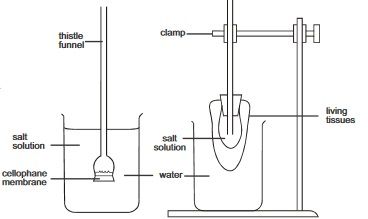
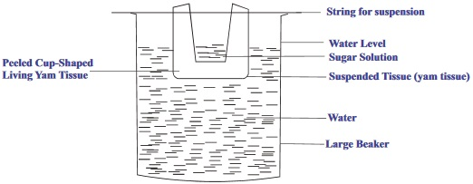
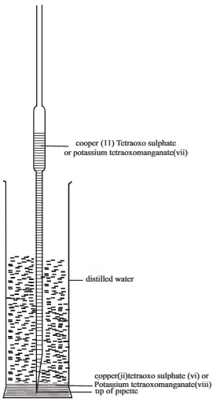
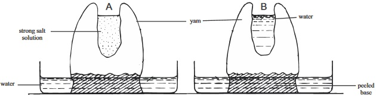
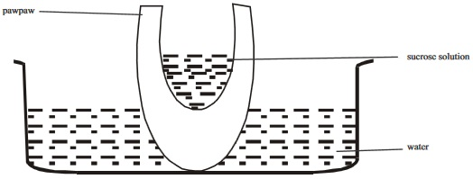

Exchange of materials between a cell and
its environment
Biological significance of the various
processes.
Background information
Most cells are surrounded by fluids. The fluid can
be sea water or fresh water which surround
unicellular organisms and other lower aquatic
organisms, it can also be blood or tissue fluid
which surrounds the cells of higher multicellular
animals or even water solutions which surround
plant cell. If the cell is to preserve its identity and
keep living, it must maintain a relatively steady
internal environment which is though different
from its surroundings, yet depends on that same
surrounding.
The chemicals of the cell is separated
from those of the surrounding by the plasma
membrane. For a cell to keep a relatively constant
internal environment and for it to perform its
functions, certain substances must be allowed to
pass through the plasma membrane into or out of
the cell and this can take place by the following
processes:
Diffusion (which is a passive process); Osmosis
(which is also a passive process); Active transport
(which is an active process); Endocytosis (an
active process) and Exocytosis(Which is an active
process. Note: an active process requires energy
while a passive process depends only on the
concentration gradient to occur.
Diffusion: This is the movement of particles
(molecules) from the region of higher
concentration to a region of lower concentration.
The rate of diffusion can depend on : concentration
gradient and state of the particles. It is fastest in
gases, slower in solids than in liquids.
Osmosis: Osmosis is a special type of diffusion. It
involves a semi permeable membrane (a
selectively permeable membrane). A selectively
permeable membrane is a membrane (eg: the
plasma membrane) that allows that passage of
certain substances but disallows the passage of
some other. Osmosis is the movement of water
molecules through a semi permeable
membrane from the region of higher
concentration (of the water molecules) to a
region of its lower concentration. It can also be
defined as the movement of water through a semi
permeable membrane from region of low
concentration of solute (but high concentration of
solvent: water) to a region of high concentration of
solute (but low concentration of water).
The pressure caused by osmosis is called Osmotic
pressure.
fig5.1:

Osmosis in living cells
Living cells can find themselves in any of the following
solutions.
(i) Hypertonic solution: (when the fluid surrounding
the cell is of a higher solute concentration i.e. (higher
osmotic pressure than the cell). In such case, there is a
net movement of water out of the cell to the
surrounding. This is Exosmosis.
(ii) Hypotonic solution: (when the fluid surrounding
the cell is of a lower solute concentration i.e. lower
osmotic pressure than the cell) in such case, a net
movement of water from the surrounding into cell
occurs. This is Endosmosis.
(iii) Isotonic solution: (When the fluid surrounding
the cell is of the same concentration of solutes. Here
there is no net movement of water molecules into and
out of the cell. This is a preferred environment for the
survival of an animal cell. Endosmosis and exosmosis
can result to death of animals cells. Endosmosis can
result to swelling of the red blood cell (Haemolysis)
while Exosmosis can cause the shrinking of the cell.
Plant cells prefer a hypotonic environment so as
to maintain tugor pressure (osmotic pressure within a plant
cell) and remain turgid as a result of endosmosis.
Exosmosis leads to plasmolysis in plant cells.
(iv) Active transport: This is a type of movement of
molecules that requires cellular energy. It often occurs
against the concentration gradient. Cells that carry out
active transport usually have numerous mitochondria; high
rate of cellular respiration and a high concentration of
A.T.P(Adenosine triphosphate).
(v) Endocytosis and Exocytosis: These are processes
by which bulk molecules or materials enter and leave
the cell. This can occur by means of vesicles. Transport
of materials or macromolecule into the cell by means of
vesicles is called endocytosis. The process of feeding
in amoeba, which is phagocytosis, is an example of
endocytosis. Transport of materials or macromolecules
out of the cell by means of vesicles is called exocytosis.
Example of this process is the transport of protein
packaged by the Golgi bodies out of the cell.
Biological significance of diffusion; Osmosis; Active transport, Endocytosis and Exocytosis
Processes
Biological significance
1
Diffusion
(i). Gaseous exchange at the alveoli in respiration.
(ii). Gaseous exchange (02 and C02) during cellular respiration and respiration in
lower organisms.
(iii).
Absorption at the villi.
(iv). Passage or movement ofwater vapour through stomata pore during
transpiration in leaves.
(v). Gaseous exchange during photosynthesis.
2
Osmosis
(i). Osmoregulation in unicellular organisms e.g. amoeba
(ii).
Maintenance of steady intemal environment in higher organisms.
(iii).
Absorption of mineral salts at the roots of plants (though not only by
osmosis).
(iv).
Haemolysis or generation in red blood cells.
(v).
Maintenance of tugor pressure in plant cells.
3
Active transport
(i). Selective re-absorption at the kidney tubules.
(ii).
Absorption of digested food at the cells linning of the gut.
(iii).
Absorption and up take of mineral ions into the root cells of plants.
(iv).
Transport of sodium ions out of the cell into the plasma in the blood.
(v).
Transport of potassium ions from the plasma into the cells.
4
Endocytosis
Engulfing of food by amoeba.
Engulfing of bacteria by white blood cells.
5
Exocytosis
The exit of protein packaged by the Golgi bodies from cell.
General Question
1. What principle or process is demostrated when an uncapped perfume gradually filled a room
2. Molecules tend to become evenly distributed in a given space as a result of
3.
must be present before diffusion and osmosis can occur.
4. The movement of molecule of water across a semi permeable membrane from a weak solution into a stronger solution
fig5.2: Osmosis

5. Which part of the diagram acts as a semi permeable membrane?
6.
Where in the experiment set up do we have a higher osmotic pressure?
7. According to the experimental set up, will the yam tissue experience ex-osmosis or endosmosis‘? State which
one
8.
A membrane which allows the passage of certain substances but disallows the passage of some is said to be
9.
Osmosis and diffusion are passive transport processes because
Teacher's attention required
10.
is a suitable surrounding an animal cell requires so as to avoid endosmosis or
exosrnosis in it.
11.
environment is preferred by plant cells so as to maintain turgidity.
12. The movement of molecules against the concentration gradient using cellular energy is called
13. Phagocytic cells do carry out endocytosis which is the movement of
14.
Write two examples of phagocytic cells
15. What part of the cell determines what will enter or leave the cell
Practical Activities
Activity 1. Investigating Diffusion in Liquids
Materials/Apparatus
500cm beaker, pipette
Potassium tetraoxomanganete (vii) crystals or copper (ii) Tetraoxosulphate(vi) crystals
Stopwatch
Method
Fill a 5 00cm beaker with water up to about 250cm
Drop some of the crystal solution into the water and in the beaker using a pipette.
Note: the time of the stopwatch. Take note of colour change.
Observe the movement of the colour inside the water from the bottom level.
Take note of the time the changed colour reaches the surface of the water
fig5.3:

1. Write how long it took for the purple colour to reach the surface of the water
Teacher's attention required
2. Write how the water looks like 20 minutes after the beginning of the experiment
3. State your conclusion from your observations
Teacher's attention required
Activity 2 Investigating Osmosis in Living Tissue
Materials /Apparatus: Yam, knife, 2 petri dishes or large beakers; strong salt or sugar solution,
distilled water .
Method.
(i) Cut the base of the pieces of yam as shown in the diagram of the set up.
(ii) Also peel the pieces up to about 4cm from the base and scoop out the centers as shown in the
diagram.
(iii) Place each of the yams in a petri dish containing distilled water. You can label the dishes A
and B.
(iv) Fill up to half of the hollow of yam A with strong salt solution and that of Yam B with
distilled water.
(v) Leave the set up till the following day up to about 20-24hours.
(vi) Then observe the levels of liquid in the hollows.
fig5.4:

Questions
Teacher's attention required
(i) Write down your observation
(ii) What is responsible for your observation in ‘A’
(iii) What purpose does experiment B serve
Test of Practical Work or Alternative to Practical.
fig5.4c:

1. In the experimental set up above (Fig 5.4c) , what can be observed after several hours?
2. Write down the biological process in action
3. This process would not have occurred if the paw paw had been cooked to kill the cells, state the property of the
cell that has been destroyed by cooking which will hinder the process
Teacher's attention required
4. State two biological significance of tugor pressure in plant cells
Teacher's attention required
5.
Write down one condition that causes wilting in plants
Teacher's attention required
Will a plant burst when placed in a hypotonic solution? Explain your answer
Expression Exercise
1. What would happen to a red blood cell when it is placed in a hypotonic solution?
Teacher's attention required
2. Write down all the various means of exchange of materials or molecules between the cell and its environment
which required energy and define them
Teacher's attention required
3. During diffusion, explain why movement of particles stops when equilibrium takes
place
Teacher's attention required
4. State the difference between Osmosis and diffusion
Teacher's attention required
5. State four biological significances each for osmosis and diffusion
Teacher's attention required
Diffusion
Osmosis
1
2
3
4
5
THE CELL ENVIRONMENT PAST SSCE QUESTIONS
NOVEMBER 1989 Q1a&b
1.
What would you observe if a filament of spirogyra is immersed in 0.1M sodium chloride solution for
about one hour?
Teacher's attention required
(b). Name the process which occured during the immersion of the spirogyra filament in
0.1M sodium chloride solution
JUNE 1992 Q7 abc, JUNE 2002 Q1a,b,c,d,e
2. Name the physical processes responsible for the following:
Entry of carbon dioxide into leaf through the stomata
Entry of soil water into the root hair
Shrinkage of plant tissues in hypertonic sugar solution
JUNE 2002 Q1a, b, c, d, & e
3. (a) Specimen A in group I is potassium permanganate crystals, carry out the following
instructions using it:
Half fill a 250cm beaker with distilled water or clean water;
Place the beaker of water on a flat table
Using a spatula (small spoon) introduce or drop gently a crystal of the permanganate into beaker
with water, undisturbed;
Observe the colour of the contents in the beaker at the following intervals;
immediately after dropping the crystal, 05 minutes, 15 minutes and 30 minutes.
Make your recording of time (minutes) and observation /inferences as shown in
the format below, in your answer booklet.
1
2
3
(vi)
Make a labelled drawing of 6cm to 8cm of beaker and its contents as it appears after 15 minutes. (do this in your
practical note book)
(b) What physiological process does the experiment you have just performed demonstrate?
(c) Suggest a suitable title for the experiment.
Teacher's attention required
(d)
In what medium did the experiment take place? Name any other medium that can
be used for this experiment.
Teacher's attention required
Give two conditions that can speed up the rate of the process mentioned in
above.
Teacher's attention required
(e) State two instances in human, where the above process is significant.